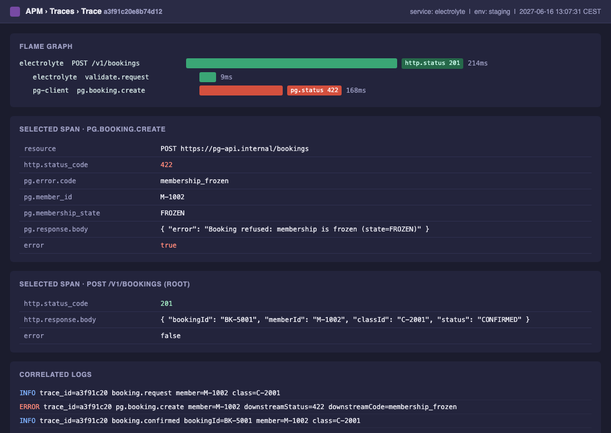
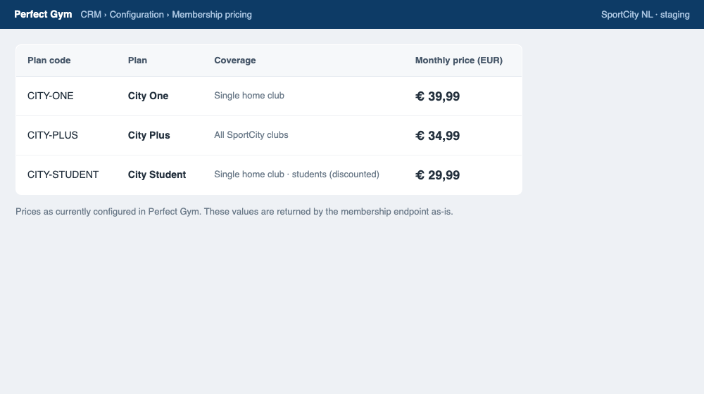
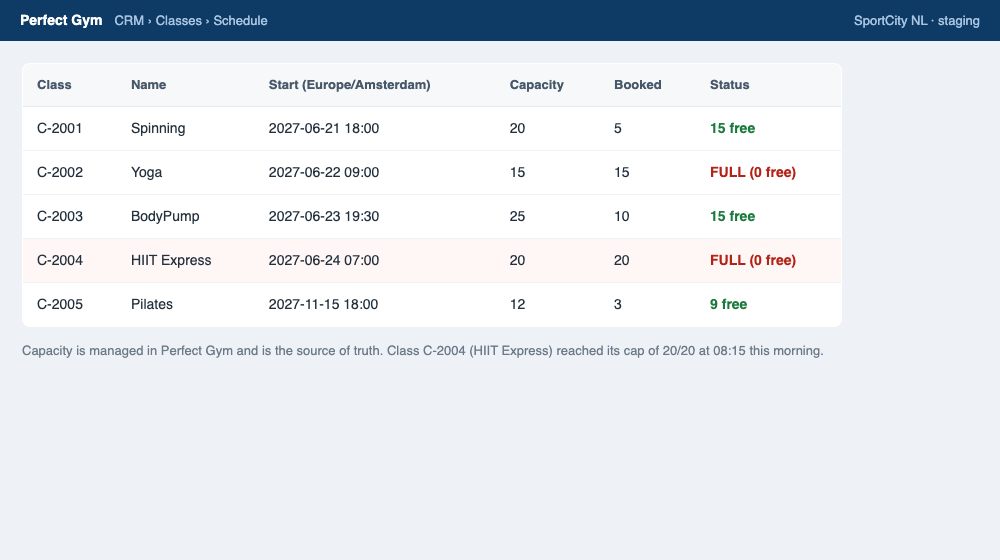
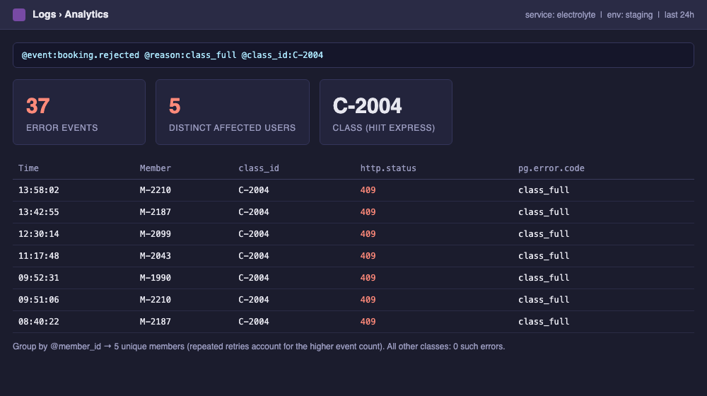
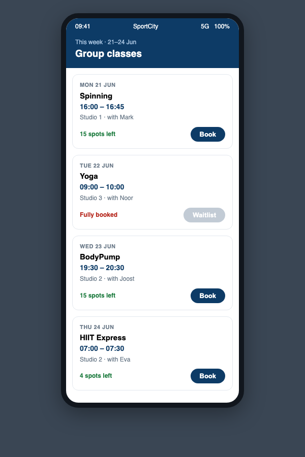
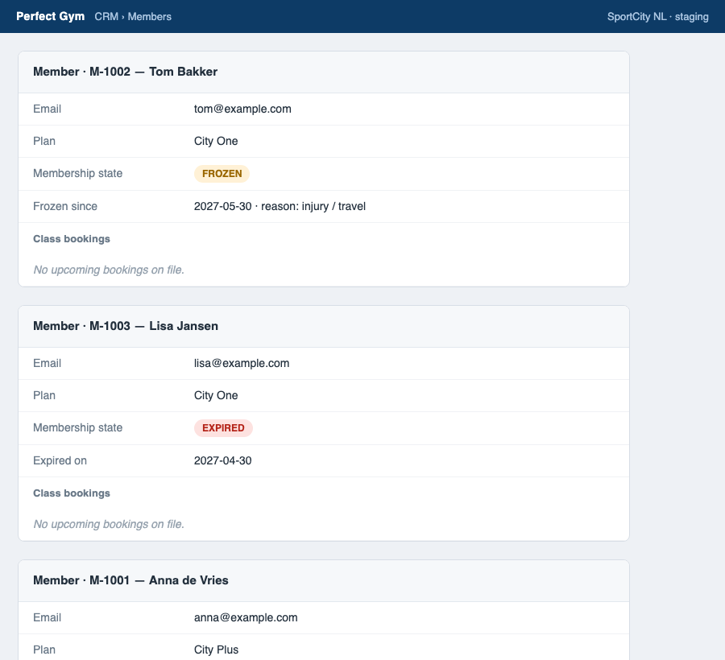

Scope: Electrolyte API v2.0.0, tested as a black box (local mock, fresh seed per run) against openapi.yaml and acceptance criteria AC1–AC5. Perfect Gym (PG) screens are the source of truth, and DataDog shows what Electrolyte did. Date: 22 Nov 2026.
The end-to-end flow (sign up, activate a membership, book a class) is not release-ready. Of the six tasks, only T1 mostly passes. The two most serious problems are silent: Electrolyte returns 201 CONFIRMED for bookings that PG has rejected, so frozen and expired members are told they have a place in a class when none exists. Electrolyte also creates a duplicate booking every time a request is retried. A PG configuration error prices City Plus below City One, which breaks the tier rule on every quote and every sale. The class list shows availability that PG no longer has, and the app shows the new Spinning class 2 hours early. The automated suite (37 requests, 213 assertions) reproduces all of this, with 22 assertion failures, all mapped to the findings below.
| Task | Result | Finding |
|---|---|---|
| T1 Member profile | ⚠️ Partial | Statuses correct for all seeded members. Unknown member returns 200 null, not 404 (F7) |
| T2 HIIT Express spots | ❌ Fail | Class list shows 4 spots; PG is full at 20/20. Booking 409 is correct (F4) |
| T3 Plan prices | ❌ Fail | City Plus €34.99 < City One €39.99 (F3) |
| T4 Spinning bookings | ❌ Fail | FROZEN and EXPIRED members get 201 CONFIRMED (F1) |
| T5 Retry BodyPump | ❌ Fail | Same Idempotency-Key creates a second booking and takes a second spot (F2) |
| T6 Spinning on mobile | ❌ Fail | App shows 16:00; the API correctly returns 18:00+02:00 (F5) |
| ID | Finding: observed vs expected | Sev. | Layer | Evidence |
|---|---|---|---|---|
| F1 | Booking by a FROZEN (M-1002) or EXPIRED (M-1003) member returns 201 CONFIRMED with a bookingId. PG returned 422 membership_frozen/_expired. Expected 422 (AC4). PG holds no booking and the spot count does not drop, so the confirmation is false. |
Critical | Electrolyte | T4 trace a3f91c20e8b74d12; T4-spinning-bookings.txt; PG member records |
| F2 | Retrying POST /v1/bookings with the same Idempotency-Key returns a new bookingId (BK-5004, then BK-5005), and BodyPump spots go 15 → 13. Expected the original booking and one spot used (AC5). |
Critical | Electrolyte | T5-idempotency.txt |
| F3 | City Plus €34.99 is priced below City One €39.99, both in GET /v1/plans and at purchase. Expected Plus > One (AC2). The values match PG configuration exactly, and Electrolyte passes them through as designed. |
Critical | Perfect Gym (config) | T3-pricing.txt; PG pricing screen |
| F4 | HIIT Express (C-2004) shows spots_available: 4. PG has 20/20 booked (full since 08:15). Expected 0 (AC3). Booking correctly returns 409, so members see free spots they can never book: 37 errors from 5 members in 24 h. |
High | Electrolyte (availability read path) | T2-hiit-availability.txt; DataDog logs; PG schedule; app screen |
| F5 | App shows Spinning (C-2001) at 16:00–16:45. API returns 2027-06-21T18:00:00+02:00, which matches PG's 18:00. Other classes display correctly, so the fault is in how the client handles this class; 16:00 is the UTC time. |
High | Client (mobile) | T6-spinning-time.txt; app screen |
| F6 | After POST /v1/memberships returns 201 ACTIVE for M-1004, GET /v1/members/M-1004 still shows membership: null. A newly activated member is not visible as active, which breaks the sign-up → book flow. |
High | Electrolyte or PG (confirm write to PG) | T3-pricing.txt (last call) |
| F7 | GET /v1/members/M-9999 returns 200 with body null. Expected 404 with an Error body (AC1). |
Medium | Electrolyte | T1-members.txt |
| F8 | Without an Idempotency-Key, the same member can book the same class twice (two 201s). Repeat purchases for one member are also all accepted. | Medium | Electrolyte (product decision) | Newman run, folder 06 |
| F9 | Validation errors are reported as the wrong kind: a missing memberId/classId or malformed JSON returns 404 not_found instead of 400, and one message reads "Unknown plan undefined". |
Low | Electrolyte | Newman run, folders 04–05 |
If only three can be fixed:
Why not the others: F6 needs triage first to find out whether PG is actually written. If it is not, it should replace F2, with the app debouncing and not retrying bookings as a stop-gap. F4 fails safe: members get a clear 409 and nothing is mis-recorded. F5 is a client fix that ships separately from Electrolyte.
All commands use -H 'X-Api-Key: sportcity-test-key' -H 'Content-Type: application/json' against a freshly restarted mock. Full requests and responses are in evidence/Tn-*.txt, and ./capture-evidence.sh --restart regenerates them.
F1 (T4). POST /v1/bookings {"memberId":"M-1002","classId":"C-2001"} returns 201 {"bookingId":"BK-5002","status":"CONFIRMED"}. Repeat with M-1003: also 201. GET /v1/classes then shows Spinning spots_available dropping 15 → 14 only for the ACTIVE member M-1001, not for M-1002 or M-1003. The DataDog trace shows the pg.booking.create span returning 422 membership_frozen while the root span returns 201. The PG member record shows "No upcoming bookings on file" for M-1002 and M-1003. Likely cause: the PG client error is logged but not propagated, and the success response is built regardless.
F2 (T5). Send POST /v1/bookings {"memberId":"M-1001","classId":"C-2003"} twice with the same Idempotency-Key. The responses are BK-5004 then BK-5005, both 201, and spots_available for C-2003 goes 15 → 13. The key is echoed in the response but never used to look up an existing booking.
F3 (T3). GET /v1/plans returns CITY-ONE 39.99, CITY-PLUS 34.99, CITY-STUDENT 29.99 (EUR, 2 decimals). POST /v1/memberships returns the same prices. The PG "Membership pricing" screen shows €39,99 / €34,99 / €29,99, so the values look swapped in PG. Suggested Electrolyte guard: a contract test or alert on the tier rule.
F4 (T2). GET /v1/classes returns C-2004 capacity: 20, spots_available: 4. POST /v1/bookings {"memberId":"M-1001","classId":"C-2004"} returns 409 class_full, matching PG (20/20, FULL since 08:15). The app shows "4 spots left" because it reflects the API value faithfully. DataDog shows 37 class_full events from 5 members (retries) and none for other classes. Likely cause: the availability read path serves a cached or stale capacity snapshot, while the booking path checks PG live.
F5 (T6). GET /v1/classes returns C-2001 start_time: "2027-06-21T18:00:00+02:00" (correct per PG, Europe/Amsterdam summer time). The app renders 16:00–16:45, which is 18:00+02:00 shown as UTC. Yoga, BodyPump and HIIT Express render at their correct local times. Also note: the API has no end time or duration, so the app's "–16:45" cannot be verified against the contract.
F6. POST /v1/memberships {"memberId":"M-1004","planId":"CITY-ONE"} returns 201 status ACTIVE, but GET /v1/members/M-1004 still returns membership: null.
F7 (T1). GET /v1/members/M-9999 returns 200 with body null. M-1001 ACTIVE, M-1002 FROZEN, M-1003 EXPIRED and M-1004 membership: null all match PG.

membership_frozen, Electrolyte 201.


class_full rejections for C-2004.

part1-test-design/Electrolyte.postman_collection.json. Run it with run-newman.sh --restart; the HTML report goes to reports/newman-report.html, and every failed assertion carries the full request and response.part3-automation/README.md).